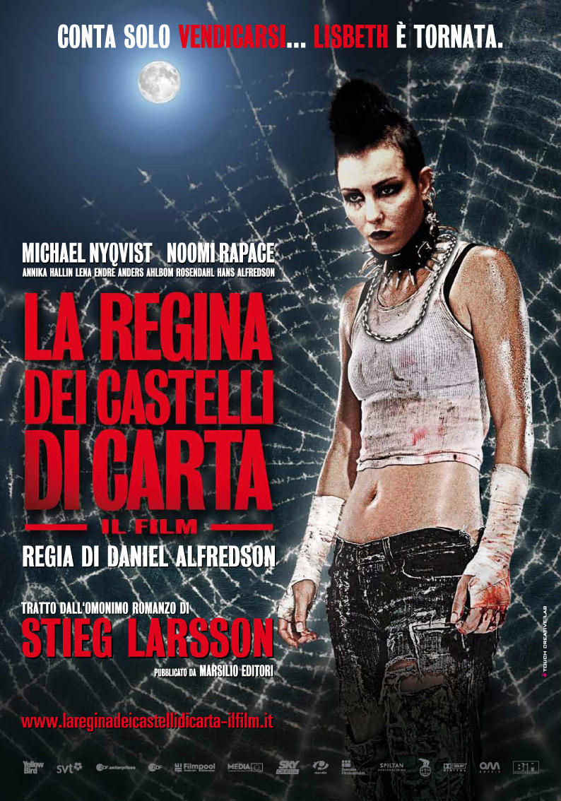
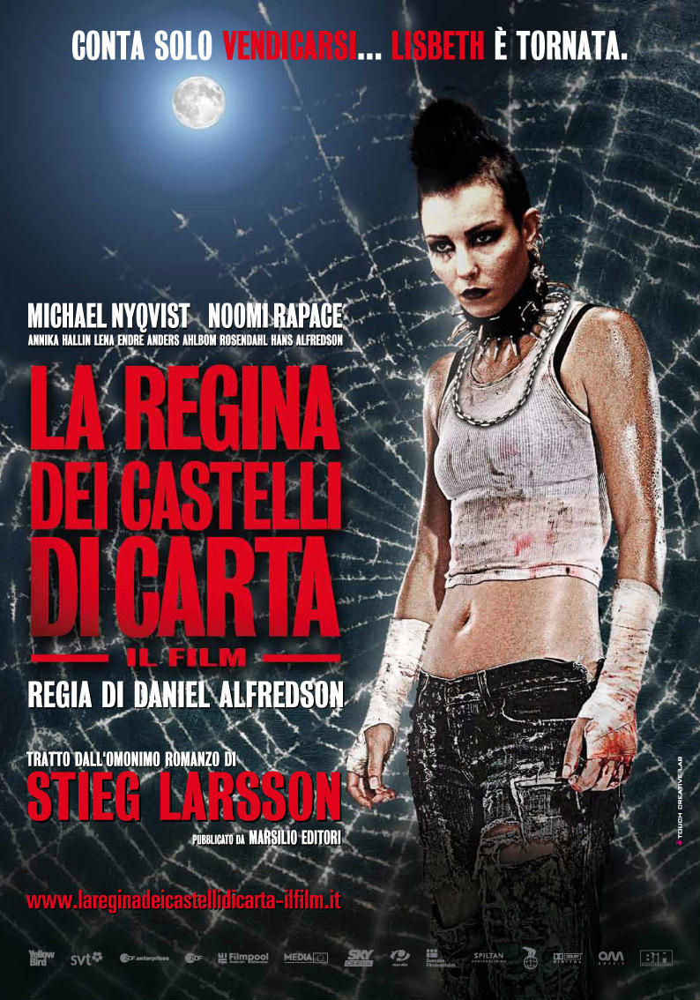

LA REGINA DEI CASTELLI DI CARTA
di Stieg Larsson

di Stieg Larsson
Il libro
(di Marcella Gangemi)
La regina dei castelli di carta è il terzo volume della trilogia
Millennium e rappresenta la naturale conclusione delle vicende narrate
nel secondo. Questo terzo capitolo decolla un po’ a fatica, le parti
più “solide” sono sicuramente l’inizio e buona parte della fine dove il
ritmo subisce una forte impennata. Lo stile è quello di Larsson, che ha
caratterizzato l’intera trilogia, efficiente e diretto però spesso si
perde con le tante digressioni (come se si volesse allungare il brodo).
Eppure la trama, abbastanza intricata e complessa con i vari intrecci
politici, cattura subito l’attenzione, il lettore percepirà un
coinvolgimento emozionale (già alto e potente nei primi due) non
indifferente, per l’appunto si alternano generi come il thriller, lo
spionaggio elettronico e il giornalismo considerato come un canale
attraverso il quale manipolare la realtà (tematica fortemente attuale).
La vicenda, come già detto, va molto a rilento e i risvolti al riguardo
tarderanno ad arrivare (questo però non preclude la suspense e i colpi
di scena). L’autore ha compiuto dei passi in avanti nella profondità di
alcuni personaggi (attraverso i quali descrive l’intera società svedese
con la sua “mentalità” e abitudini) prima tra tutti Lisbeth Salander,
ed anche Mikael Blomqvist (pur con tutti i suoi difetti) non manca di
coraggio e determinazione pari quasi a quelli della co-protagonista.
Per contro, questo capitolo conclusivo certo non spicca tra i suoi
predecessori, sicuramente il gran numero di personaggi crea non poca
difficoltà nel seguire tutte le vicende e a rendere l’opera (già
complessa di suo) un po’ pesante da leggere. Eppure nonostante i vari
punti deboli non si può far a meno di leggerlo e concludere il romanzo
con l’unico finale accettabile. Perché sì con La regina dei castelli di
carta si potrebbero benissimo concludere le avventure di Lisbeth e
Mikael in modo regolare, pensando che in fondo non potrebbe terminare
in modo diverso una storia iniziata con una battaglia contro gli Uomini
che odiano le donne.(di Marcella Gangemi)
Il film

(di Alessandro Bavuso)

(di Alessandro Bavuso)
Il terzo film della saga che traspone su pellicola i romanzi della Trilogia del Millennio di Stieg Larsson è forse il meno riuscito dei tre. Diretto al pari del secondo capitolo dal regista Svedese Daniel Alfredson questo terzo capitolo si dimostra inferiore ai suoi due predecessori, pur essendo ugualmente un film di altissimo livello. “Registicamente” il film non presenta alcun’imperfezione, ogni singola scena si dimostra diretta egregiamente e capace di esaltare la performance degli attori, protagonisti e non, che ancora una volta si rendono capaci di una prestazione magistrale. Tuttavia, il film perde molto rispetto al terzo romanzo dello scrittore Svedese, pur restando abbastanza aderente alla trama. La pellicola si apre mostrando Lisbeth miracolosamente sopravvissuta allo scontro con il fratellastro e il padre svoltosi nel capitolo due della saga. Il film parte con un ritmo basso, mostrandoci quasi subito la protagonista in ospedale, senza riuscire a trasmettere un senso di tensione per la sorte di quest’ultima. Lo sviluppo di trama prosegue, però, bene rialzando il ritmo e intensificando la suspense nel momento in cui il susseguirsi frenetico degli eventi ravviva l’azione. Rivediamo, dunque, i protagonisti delle prime due opere e le storie dapprima intrecciarsi e sbrogliarsi, svelando gradualmente misteri e retroscena, fino a condurci verso un “lieto fine”, capace di evocare bene il finale del libro, rievocandone appieno anche l’atmosfera tipica dell’intera trilogia.
I PERSONAGGI
Ronald Niedermann
(di Ilaria Calveri)
Nel secondo romanzo della trilogia Millennium, intitolato La ragazza
che giocava con il fuoco, nell’esistenza tormentata di Lisbeth Salander
fa la sua comparsa un personaggio dai contorni oscuri, inquietante
quasi quanto il suo aspetto. Tale figura risponde al nome di Ronald
Niedermann, cittadino tedesco e, oltre ogni ragionevole dubbio, un
killer privo di scrupoli. Questo gigante biondo assume una certa
rilevanza nel racconto di Larsson in quanto veste i panni del
fratellastro della protagonista. Il comune denominatore che unisce
Niedermann e Lisbeth è il malvagio agente segreto Zalachenko, padre di
entrambi. Nel film, dall’omonimo titolo del romanzo, l’attore svedese
Micke Spreitz presta il volto a questo personaggio.(di Ilaria Calveri)
Alexsander Zalachenko (ZALA)
(di Marco Lambertini)
Alexander Zalachenko è il padre naturale di Lisbeth, è una spia
sovietica che diserta e si stabilisce in Svezia negli anni 70. In
Svezia crea e comanda una impresa criminale che viene coperta da una
parte deviata dei servizi segreti svedesi. In Svezia diventa padre di
due figlie Lisbeth e Camilla, non sposa la loro madre Agneta, con la
quale ha solo incontri sessuali e sopratutto la picchia violentemente
causando le prime ribellioni di Lisbeth.Proprio dopo una delle solite violenze subite dalla madre , avviene poi ciò che Lisbeth chiama “Tutto il Male”. Lisbeth(che ha 12 anni) dopo aver visto le condizioni della madre decide di inseguire il padre, che è già entrato in macchina, e, quando lui apre il finestrino per parlarle, lei butta all'interno dell'abitacolo una busta da latte piena di benzina e accende un fiammifero bruciando quasi completamente il viso di Zalachenko, che però non viene accusato delle violenze causate ma anzi difeso dai Servizi segreti. Dopo uno scontro con Lisbeth all’interno di una fattoria che vede entrambi feriti gravemente e ricoverati all’ospedale di Goteborg. Qui uno dei vecchi membri della sezione deviata dei servizi, ormai malato e in pensione, uccide Zalachenko e si suicida.
Annika Giannini
(di Giuseppina Ranzini)
La figura di Lisbeth Salander, è una figura carismatica che cattura
subito il lettore, ma, in ogni suo libro, Stieg Larsson trova sempre il
modo di inserire nuove figure femminili, forti, indipendenti e con un
grande senso etico. Nel libro "La regina dei castelli di carta", la
figura dell'avvocato Annika Giannini, sorella di Mikael Blomkvist,
redattore della rivista Millenium, è una di queste.(di Giuseppina Ranzini)
Mikael vuole a tutti i costi che Annika difenda Lisbeth, anche se è un avvocato che si occupa prevalentemente di diritti delle donne e dunque, per questo motivo, manca di esperienza nel campo penale.
Lisbeth, anche questa volta, sarà messa a dura prova e si troverà a combattere contro oscuri personaggi che trameranno per distrugge la sua esistenza. Mikael, con l’aiuto dell’ala “sana” della SAPO svedese e di Annika, riuscirà a fare piena luce sulla sconvolgente storia di Lisbeth e sul complotto ordito ai suoi danni con l’aiuto della perizia psichiatrica del prezzolato dottor Teleborian. Lisbeth si rapporta con una serie di personaggi che, a loro modo, si sono affezionati a lei, ragazza dal carattere particolar